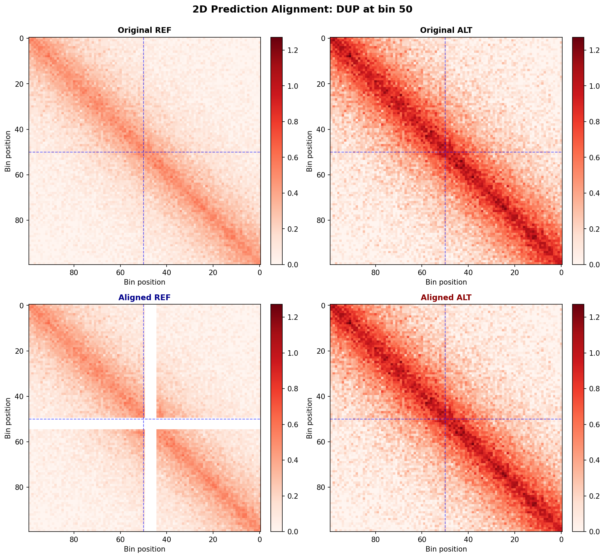
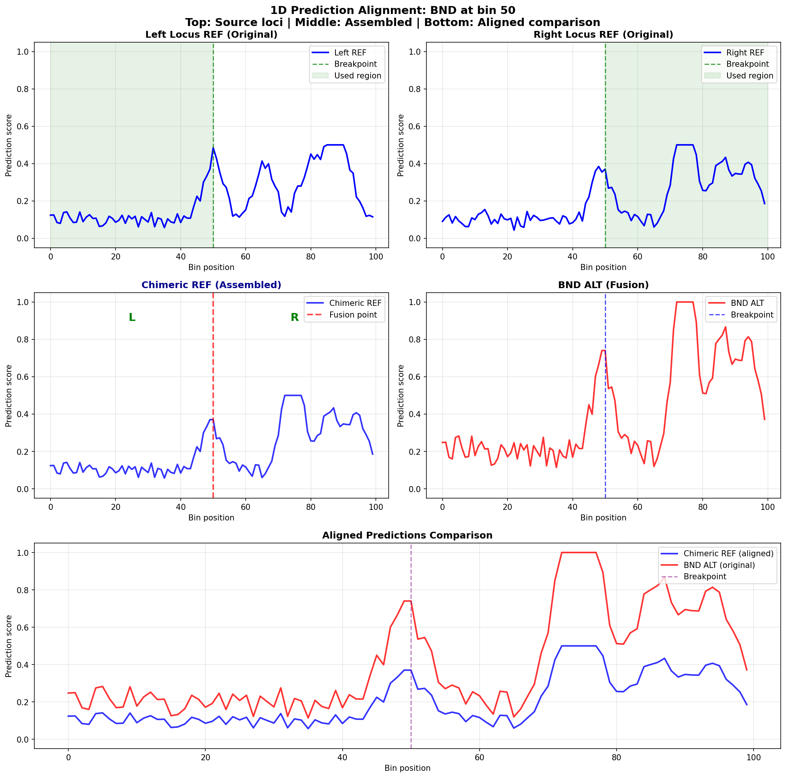

Prediction Alignment Examples
This page demonstrates how prediction alignment works for different variant types using simulated example data. Each example shows both 1D predictions (e.g., chromatin accessibility, transcription factor binding) and 2D predictions (e.g., Hi-C contact maps).
Variant Type Examples
INS (Insertion)
Insert NaN bins in reference where insertion occurs in alternate.
1D Example
2D Example
DEL (Deletion)
Insert NaN bins in ALT where deletion removes sequence from reference.
1D Example
2D Example
DUP (Duplication)
Same as insertion - duplications add sequence like insertions.
1D Example
2D Example

INV (Inversion)
Mask inverted bins in both REF and ALT. This follows the original Supremo implementation.
1D Example

2D Example
BND (Breakend)
Breakends join two distant genomic loci, creating fusion sequences. BND alignment requires special handling with dual loci.
Alignment strategy:
Reference: Generate predictions from two separate loci (left and right breakpoints), then concatenate
Alternate: Single prediction from the fused sequence
1D: Concatenate left + right reference
2D: Assemble chimeric matrix from quadrants
1D Example

2D Example
Additional Resources
Prediction Alignment User Guide - Complete API reference
03_prediction_alignment.ipynb - Notebook example
Variant Classification - Variant type decision tree
{kind=link}
Reproducing These Examples
To regenerate these visualizations:
# Run the example generation script
poetry run python create_prediction_alignment_examples.py
# Images will be saved to:
# docs/_static/images/prediction_alignment_examples/
The script source: create_prediction_alignment_examples.py